My ODD Sample Hack Directions.
This hack took me about an hour, here is how I did it. I would speculate that if several people worked on the different parts then it would only take a 20 to 30 minutes with the potential of adding extra goodies.
Go to the Open Data Asheville Data Portal at http://opendatacatalog.ashevillenc.gov/ and search for Crime
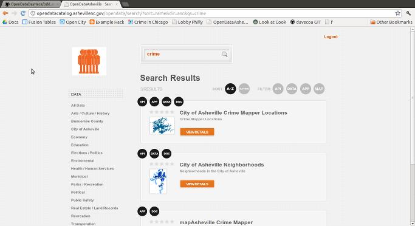
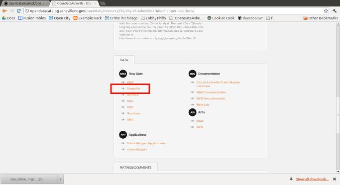
Select
the City of Asheville Crime Mapper Locations. Under the Data area
click on the shapefile link.
Hit back on the browser. Select City of Asheville Neighborhoods
Once again click the shapefile link to download.
Unzip coa_asheville_neighborhoods.zip
Unzip coa_crime_mapper_locations_view.zip
Open QGIS.
Add the layers coa_asheville_neighborhoods.shp and coa_crime_mapper_locations_view.shp to QGIS
Layer – add vector layer – navigate to where you downloaded and unziped the shapefiles
Now go to the menu choice vector – Data Management Tools – Join attributes by location
Target vector layer: coa_crime_mapper_locations_view
Join vector layer: coa_asheville_neighborhood
Output is crimeinhoods.shp
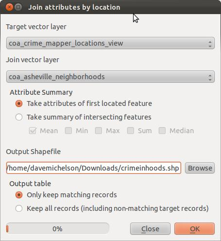
Click apply. When you are asked to add the layer to the TOC choose yes.
Then close when finished.
Now it is time to re-project the shapefile to wgs84 to get latitude and longitude.
Right click the crimeinhoods layer in the table of contents and click on save as...
Name it crimeinhoods_4326.shp
Now browse for a projection wgs84
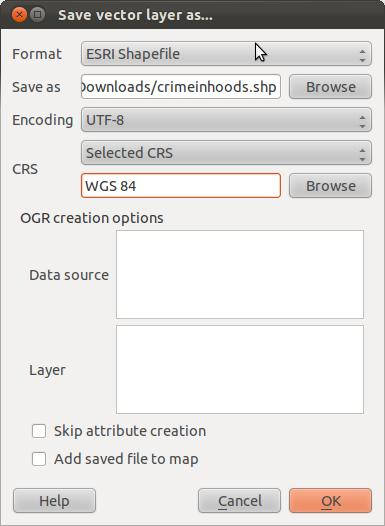
Click OK.
Add the crimeinhoods_4326.shp layer into QGIS.
Layer – add vector layer – browse to crimeinhoods_4326.shp
Open the attribute table and toggle editing on.
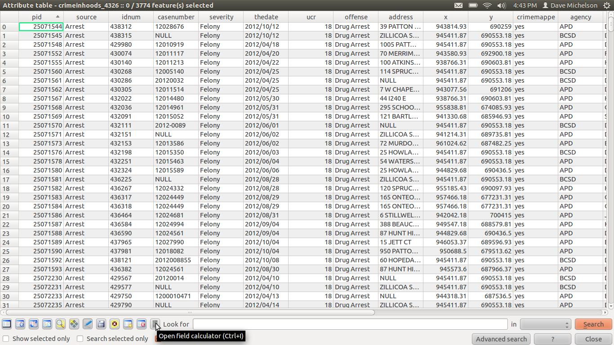
Click the field calculate utility and create two numeric (12,10) fields. One named lat and one named long. Calculate lat to $y and long to $x.
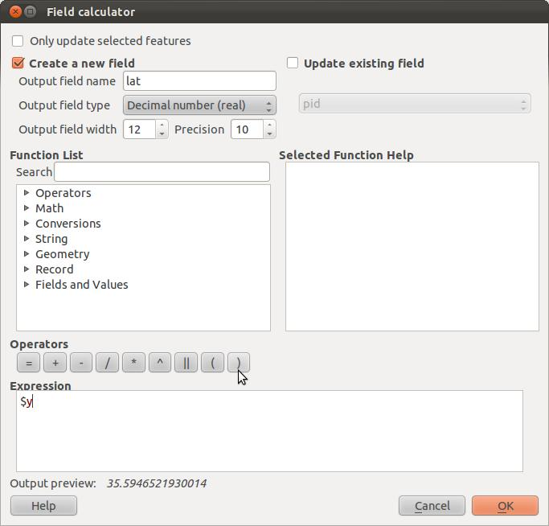
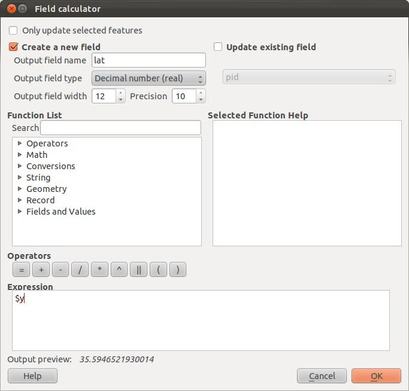
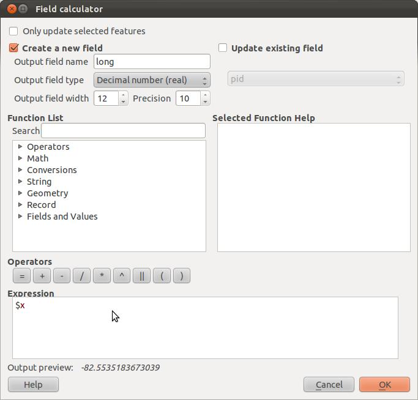
Toggle the editing off
Save the changes.
Right click the crimeinhoods layer and select save as....
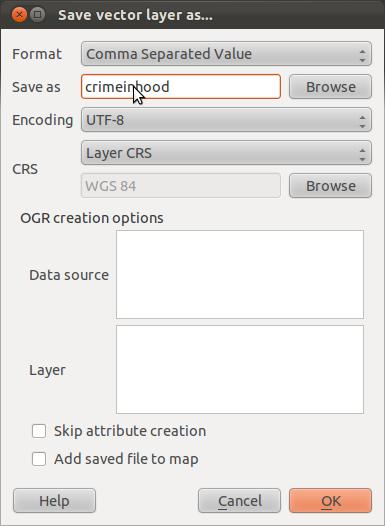
Change the format to CSV comma separated value.
Save as crimeinhood.csv.
Next in QGIS select the neighborhood name = 'DARN ' – in the neighborhood layer.
Right click the neighborhood layer in the table of contents and choose select query.
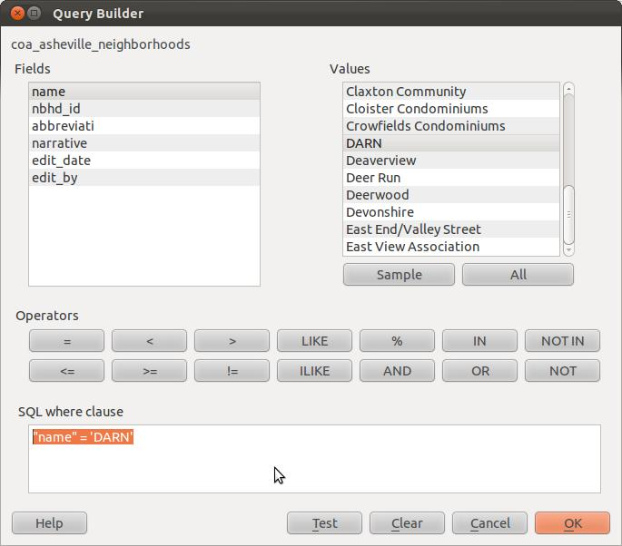
Then hit okay
Right click the neighborhood layer and choose save as...
Choose the format as kml key markup language and name it darn.kml
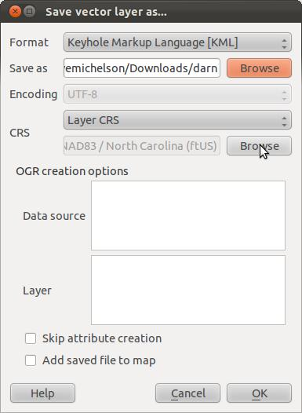
Next you will have to use a Google account to create a custom map...
In the menu of your Google account find maps and click on the link.
Use the my places button and then choose create map
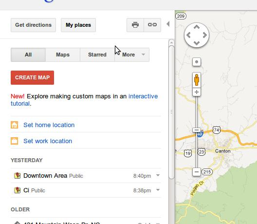
Enter a title so it's meaningful (Downtown Area is what I choose.)
Click on the import link and import the DARN KML file.
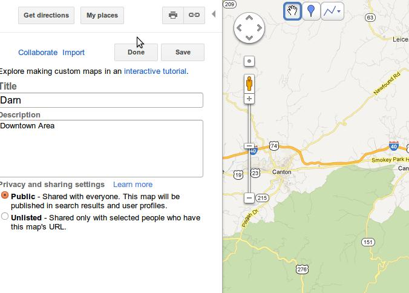
Click save, then click done.
Click the embed link.
Then click the customize and preview embedded map link.
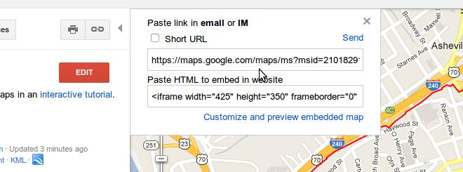
Enter a custom width of 1000 and and height of 350.
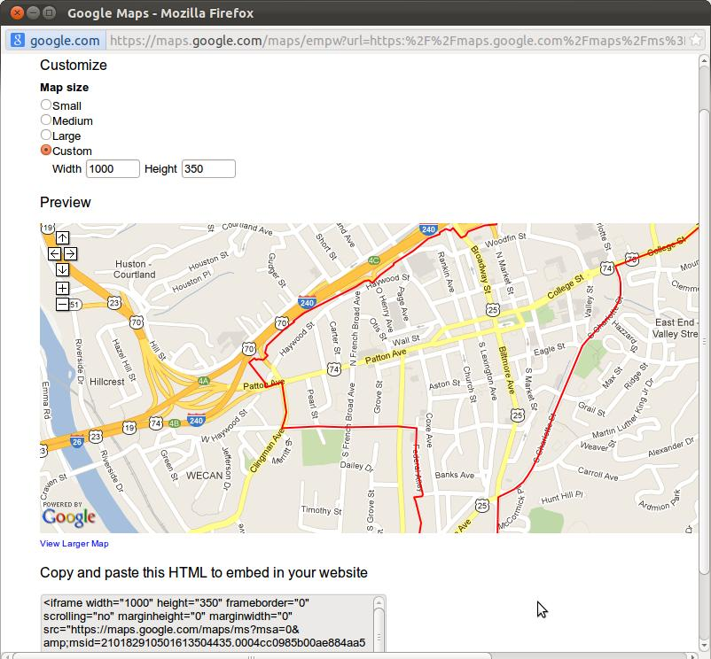
Copy and paste the HTML at the bottom into a HTML Editor or blog post.
<iframe width="1000" height="350" frameborder="0" scrolling="no" marginheight="0" marginwidth="0" src="https://maps.google.com/maps/ms?msa=0&msid=210182910501613504435.0004cc0985b00ae884aa5&hl=en&ie=UTF8&t=m&ll=35.593076,-82.552428&spn=0.012214,0.042915&z=15&output=embed"></iframe><br /><small>View <a href="https://maps.google.com/maps/ms?msa=0&msid=210182910501613504435.0004cc0985b00ae884aa5&hl=en&ie=UTF8&t=m&ll=35.593076,-82.552428&spn=0.012214,0.042915&z=15&source=embed" style="color:#0000FF;text-align:left">Darn</a> in a larger map</small>
Go to your Google account, find the link for Documents or the link for Google Drive. Add a new fusion table....
Fusion tables are under Create, then more >. (My screen shots refused to capture some of this stuff sorry.)
Choose to browse to a file from this computer. The file should be named crimeinhoods.csv, (you may have named it differently which is fine) and click next.
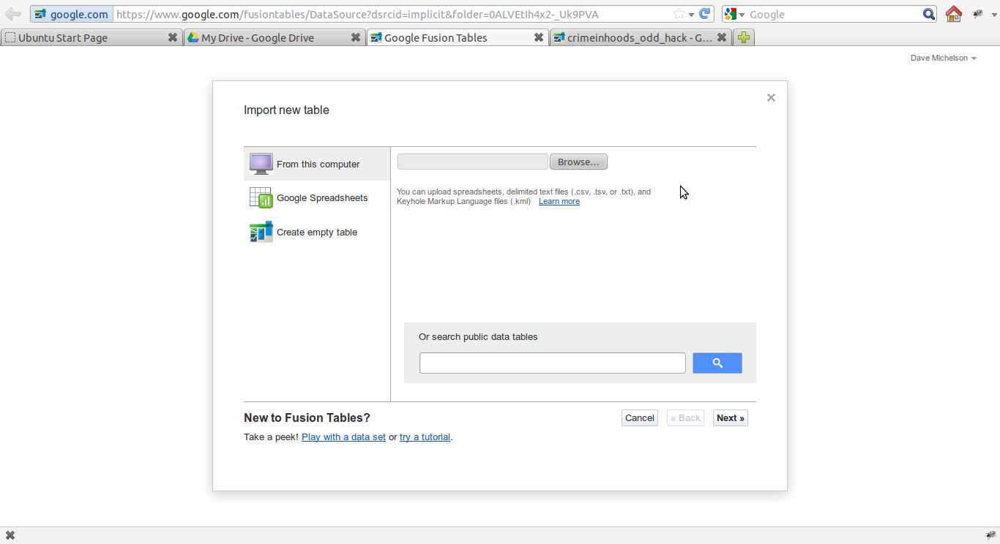
Accept the defaults and click next.
When the upload has completed click next again.
Rename the imported file to something like crimeinhoods_odd_hack
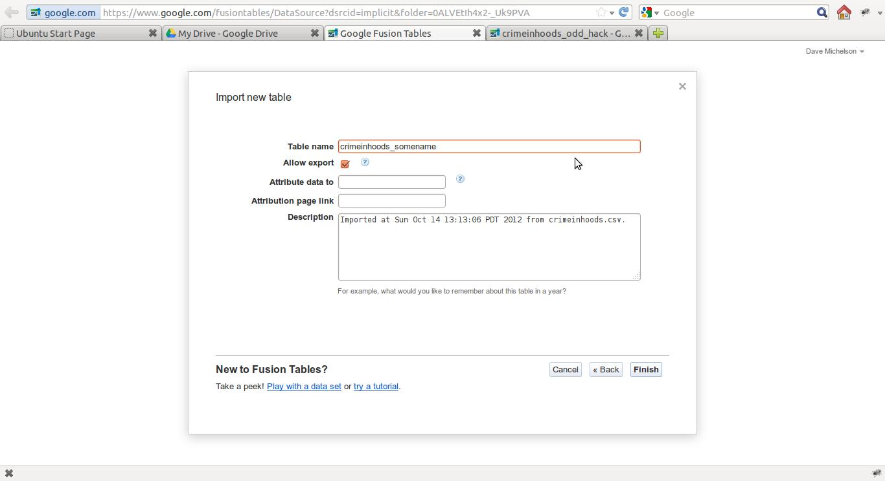
Click Finish.
You may have to wait till it uploads to work with the fusion table...
After the import is complete start your analysis by clicking on the options link
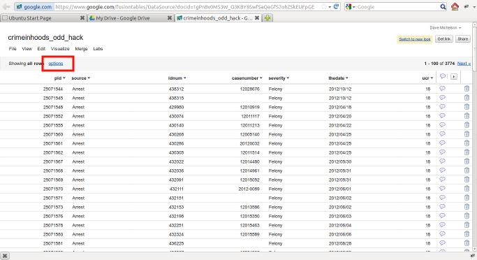
Add filters for name(neighborhood) = DARN and agency = APD. Don't forget to click the apply button!
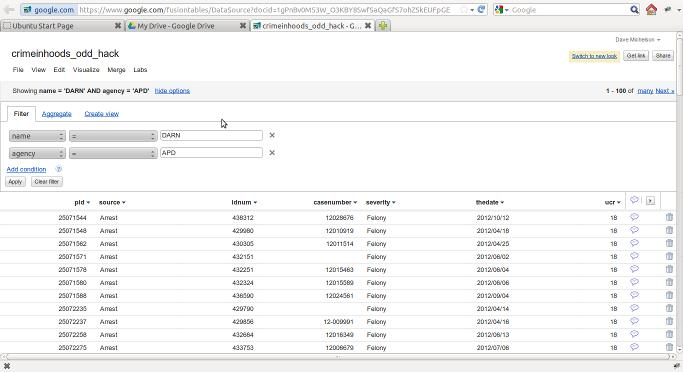
Next add an aggregate for offense. Don't forget to click the apply button!
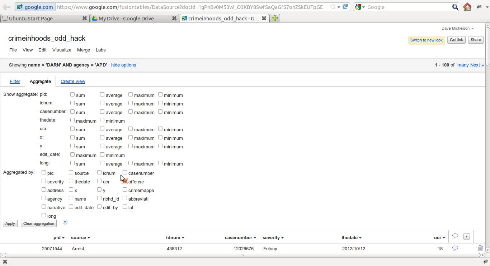
From the fusion table menu choose visualize pie. Mmmmm Pie.
Click the get embeddable code button, then the change visibility link, choose share.
Next choose the level of sharing you want. Since this is built on Open data you should lean towards public!
Click OK.
Go back to the embeddable code link and change the width to 1000 and height to 350.
Copy and paste the HTML to a HTML editor and make the HTML look nice. I copied it to a blog post it was a lot easier.
<iframe width="1000" height="350" scrolling="no" frameborder="no" src="https://www.google.com/fusiontables/embedviz?viz=GVIZ&t=PIE&containerId=gviz_canvas&q=select+col7%2C+count()+from+1gPnBv0M53W_O3KBY8SwfSaQaGfS7ohZSkEUFpGE+where+col13+%3D+'DARN'+and+col12+%3D+'APD'&qrs=+and+col7+%3E%3D+&qre=+and+col7+%3C%3D+&qe=+group+by+col7+limit+9&width=1000&height=350"></iframe>
Go back to the visualize and choose bar.
Repeat the embeddable code process width 1000 and 350 width.
<iframe width="1000" height="350" scrolling="no" frameborder="no" src="https://www.google.com/fusiontables/embedviz?viz=GVIZ&t=BAR&containerId=gviz_canvas&q=select+col7%2C+count()+from+1gPnBv0M53W_O3KBY8SwfSaQaGfS7ohZSkEUFpGE+where+col13+%3D+'DARN'+and+col12+%3D+'APD'&qrs=+and+col7+%3E%3D+&qre=+and+col7+%3C%3D+&qe=+group+by+col7+limit+9&att=true&width=1000&height=335"></iframe>
I found that the bar code did not sort by the count of crime offenses so I hacked it and added the syntax to sort it. See the addition in red below.
<iframe width="1000" height="350" scrolling="no" frameborder="no" src="https://www.google.com/fusiontables/embedviz?viz=GVIZ&t=BAR&containerId=gviz_canvas&q=select+col7%2C+count()+from+1gPnBv0M53W_O3KBY8SwfSaQaGfS7ohZSkEUFpGE+where+col13+%3D+'DARN'+and+col12+%3D+'APD'&qrs=+and+col7+%3E%3D+&qre=+and+col7+%3C%3D+&qe=+group+by+col7+order+by+count()+limit+9&att=true&width=1000&height=335"></iframe>
Repeat the copy and paste to the HTML editor or blog post.
Go to the aggregate again and change the aggregate from offense to thedate.
Change visualize to line and get the embeddable code the same way.
<iframe width="1000" height="350" scrolling="no" frameborder="no" src="https://www.google.com/fusiontables/embedviz?viz=GVIZ&t=LINE&containerId=gviz_canvas&isXyPlot=true&q=select+col5%2C+count()+from+1gPnBv0M53W_O3KBY8SwfSaQaGfS7ohZSkEUFpGE+where+col13+%3D+'DARN'+and+col12+%3D+'APD'&qrs=+and+col5+%3E%3D+&qre=+and+col5+%3C%3D+&qe=+group+by+col5+order+by+col5+asc+limit+250&att=true&width=1000&height=335"></iframe>
Again I noticed that the syntax did some things I did not like - it left out some months at the end of the graph. I hacked it like below. The hack is in red.
<iframe width="1000" height="350" scrolling="no" frameborder="no" src="https://www.google.com/fusiontables/embedviz?viz=GVIZ&t=LINE&containerId=gviz_canvas&isXyPlot=true&q=select+col5%2C+count()+from+1gPnBv0M53W_O3KBY8SwfSaQaGfS7ohZSkEUFpGE+where+col13+%3D+'DARN'+and+col12+%3D+'APD'&qrs=+and+col5+%3E%3D+&qre=+and+col5+%3C%3D+&qe=+group+by+col5+order+by+col5+asc+limit+10000&att=true&width=1000&height=335"></iframe>
Repeat the copy and paste to the HTML editor or blog post.
Now add a new filter for offense. Start with Drug Arrest, then Larceny, and then Vandalism. Each one individually, each time Repeating the copy and paste to the HTML editor or blog post.
In each instance I hacked the limit to 10000 to force the graph to show all dates.
For the maps remove all aggregates. You need the lat and long fields, which aggregation leaves off. Fusion tables auto-magically recognize the field lat and long as a location so you should be good to go creating the map.
You will also need to add another filter for date, to replicate my maps. Dates are formated like 2011/10/29(yyyy/mm/dd) in the data. Then choose visualize and map. It should be auto-magic, if your points are in Antarctica, you have the lat and long backwards.
I followed the same principle for each map as the charts. I changed the width to 1000 and height to 350. I copy and pasted the embedded link, then repeated the copy and paste to the HTML editor or blog post.
For the heat map notice that there is a check box that says display as heat map - click it. The embedded link will use that option. Get the embedded link and repeat the copy and paste to the HTML editor or blog post.
For the blog I used the blogger simple template and removed all the extra stuff. I made the width 1200. Since this is a hack you should hack it to what you want and not do exactly what I did!
I saved and published the bog post and - viola, a somewhat simple hack on Open Data from Asheville.
My complete HTML that I am using on the blog post is on github at:
https://github.com/davecoa/OpenDataDayHack/blob/master/odd_example_hack_post.html
feel free to use this guide - hack the settings.
...and Happy Hacking!